The two animations pack a lot into a small space. This guide gives you the colour key, walks through what is happening at each phase, and tells you what to look for on screen. Timecodes like 0:27 are the animation's own clock — type them into the scrubber, or click the phase name along the top.
Colour tells you whose DNA it is. Mint green is phage. Amber is host. Violet is phage DNA that has become part of the host chromosome — the prophage. When something changes colour in these films, ownership has changed. Watching the violet arc turn mint at 1:36 is watching a prophage stop being a passenger and start being a virus again.
| What it is | Where you see it | |
|---|---|---|
| Phage particle | Head, tail and tail fibres. Also its free DNA once inside the cell. | |
| Host envelope | The capsule outline of every bacterium. Whitens and strains before lysis. | |
| Host chromosome | The crinkled closed loop inside the cell — a single circular molecule. | |
| Ribosomes | Faint speckle drifting in the cytoplasm. They are what the phage hijacks. | |
| Prophage | λ film only. The stretch of the host loop that is now λ DNA. | |
| Prophage, activated | λ film only. The same arc after induction, once its lytic genes are firing. |
These are the shapes that appear briefly and matter enormously. Half speed helps.
| What it is | What it does, and when | |
|---|---|---|
| cI repressor | The lysogeny switch. Accumulates and pairs into dimers, then sits on the OR operators and silences the lytic genes. 0:31–0:41 | |
| CII | The deciding factor. It switches on cI production, but host proteases destroy it almost as fast as it is made. 0:27–0:35 | |
| Cro | cI's rival. If Cro wins the operators instead, the cell goes lytic. Here it loses and fades. 0:30–0:40 | |
| Int — integrase | Phage enzyme. Cuts and rejoins DNA at the att sites to insert the genome, and later to cut it back out. 0:41 | |
| IHF — host factor | Host protein, hence the warmer colour. Bends the DNA so Int can reach both sites at once. 0:41 | |
| att sites | Short ticks crossing the DNA. attP on the phage circle, attB on the chromosome; after integration they become attL and attR at each end of the prophage. | |
| DNA damage | Thymine dimers made by the UV. They appear one at a time while the lamp is on, so you can see the dose accumulating. 1:28 | |
| RecA filament | Host protein polymerising along damaged DNA. Beads spreading round the loop. 1:31 | |
| UV light | The violet glare and the moving beams, with a lamp badge at the top of the frame. 1:28–1:35 | |
| Toxin | Prophage-encoded protein leaving the lysogens — lysogenic conversion. 1:22–1:28 |
The phage silhouettes differ between the films, on purpose. The T4-like phage in the lytic film has a thick tail with a contractile sheath and six fibres — it fires like a syringe. λ has a long, thin, flexible tail with a single fibre and no sheath at all: its DNA is driven down the tube without anything contracting. If you can spot which phage you are looking at from the tail alone, you have understood something real about phage taxonomy.
A T4-like phage infecting E. coli. The whole point of this cycle is speed: get in, seize the machinery, make copies, break out. About 25–30 minutes in reality, compressed to 1:42 here.
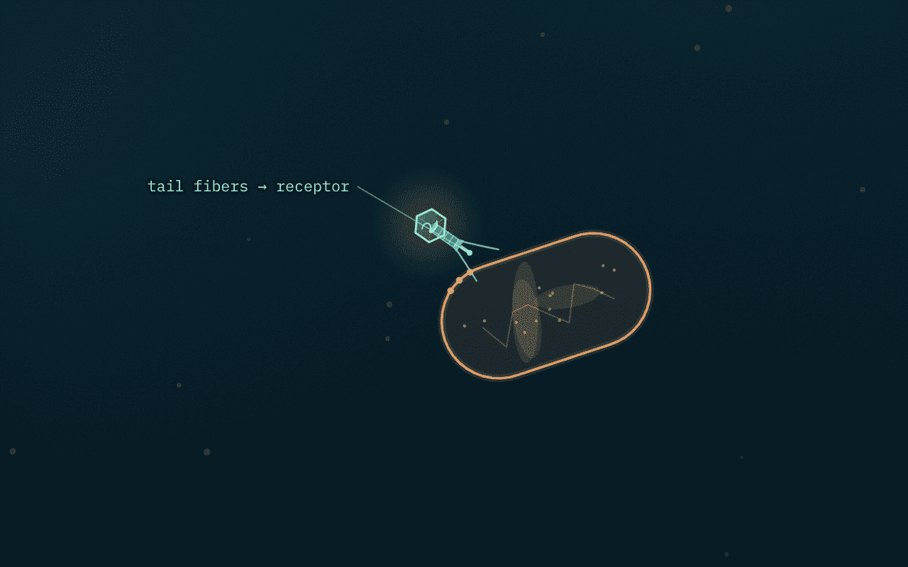
The phage drifts in and its tail fibres probe the surface until two of them lock onto specific outer-membrane receptor proteins. This is not a virus attacking a cell it has chosen; it is diffusion plus a lock-and-key fit. Host range is decided here — a phage can only infect a cell that displays the receptor its fibres recognise.
Look for: the phage sits outside the membrane throughout. It never enters.
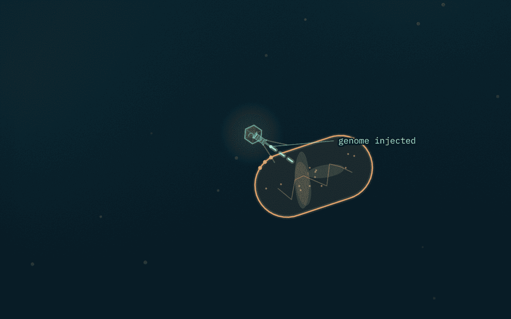
The contractile sheath shortens like a coiled spring, driving the hollow tail tube through the cell wall and membrane. The DNA is then driven through into the cytoplasm. The capsid stays outside as an empty shell — a "ghost".
Look for: the head fading as it empties, and the tail visibly shortening. This is the step λ does not do.
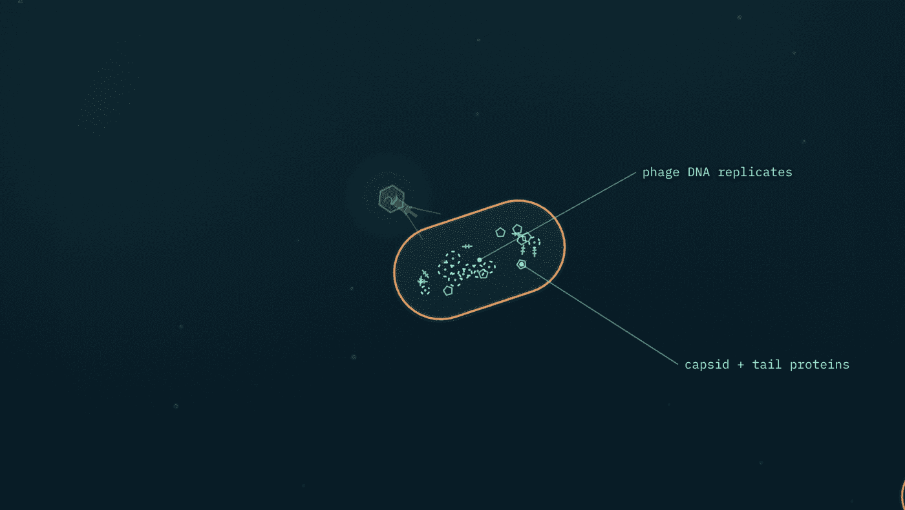
The phage shreds the host genome with its own nucleases and repurposes the ribosomes. The cell is now a factory running the phage's programme: phage DNA is replicated, and capsid, tail and baseplate proteins are mass-produced. This is the eclipse period — if you burst the cell now you would find no infectious particles, only parts.
Look for: the amber host chromosome breaking up and disappearing, replaced by mint rings and small mint components.
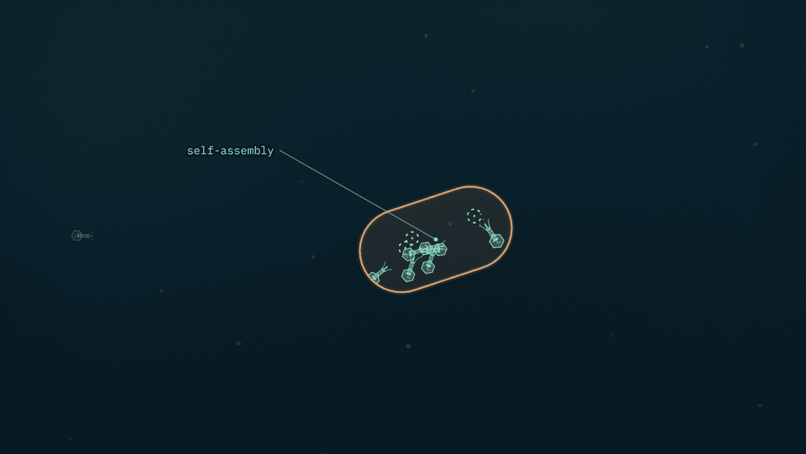
The parts self-assemble. No blueprint and no assembly line: heads, tails and fibres fit together because their shapes only fit one way, then DNA is packaged into each head. The number built before the cell bursts is the burst size.
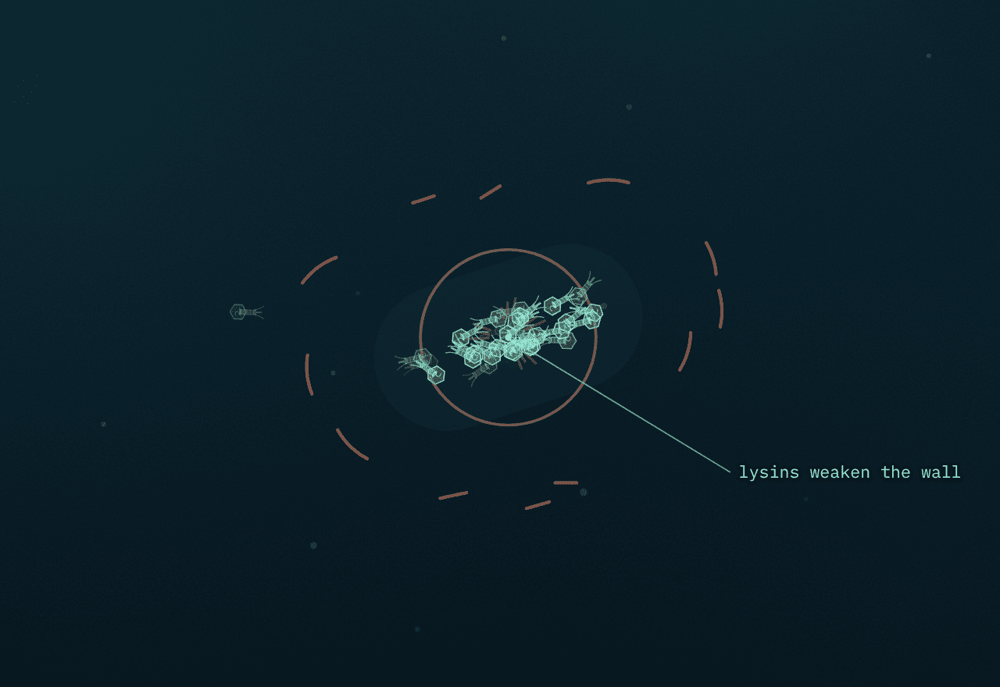
Phage-encoded lysins digest the peptidoglycan wall from the inside. The cell can no longer resist its own internal pressure, swells, and ruptures, releasing its cargo. The host is destroyed — this is what makes the cycle lytic.
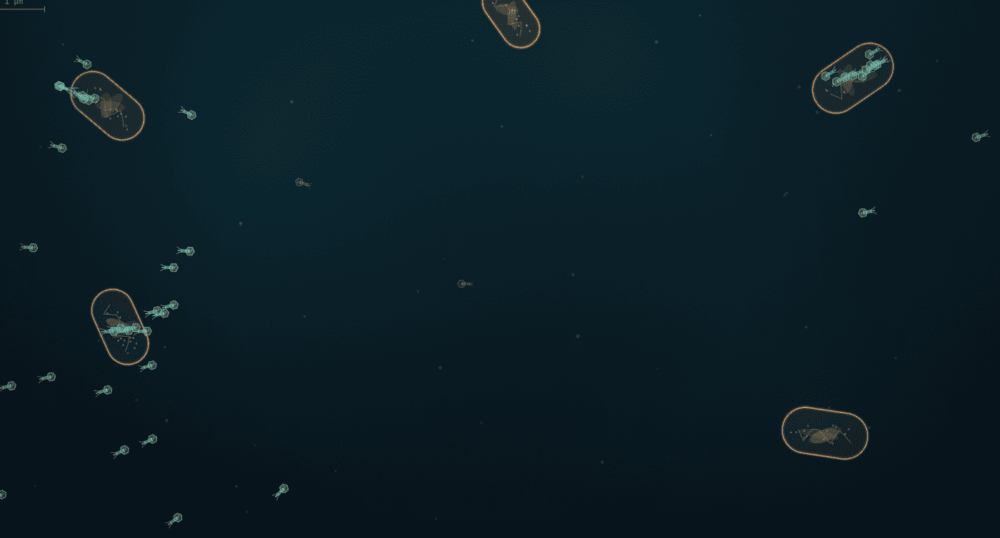
Each new particle can start the cycle again. In a dense culture the titer climbs roughly fiftyfold per generation — exponential growth that stops only when the hosts run out.
Do not read "3 of 50" as biology. Only three progeny find hosts here because the scene is deliberately sparse, so you can follow individual particles. In a real culture almost every particle that adsorbs starts a new burst.
Phage λ infecting E. coli K-12. This cycle is the interesting one: the phage does not have to kill. It can insert itself into the host chromosome and be copied, for free, for thousands of generations — then leave when conditions turn bad.
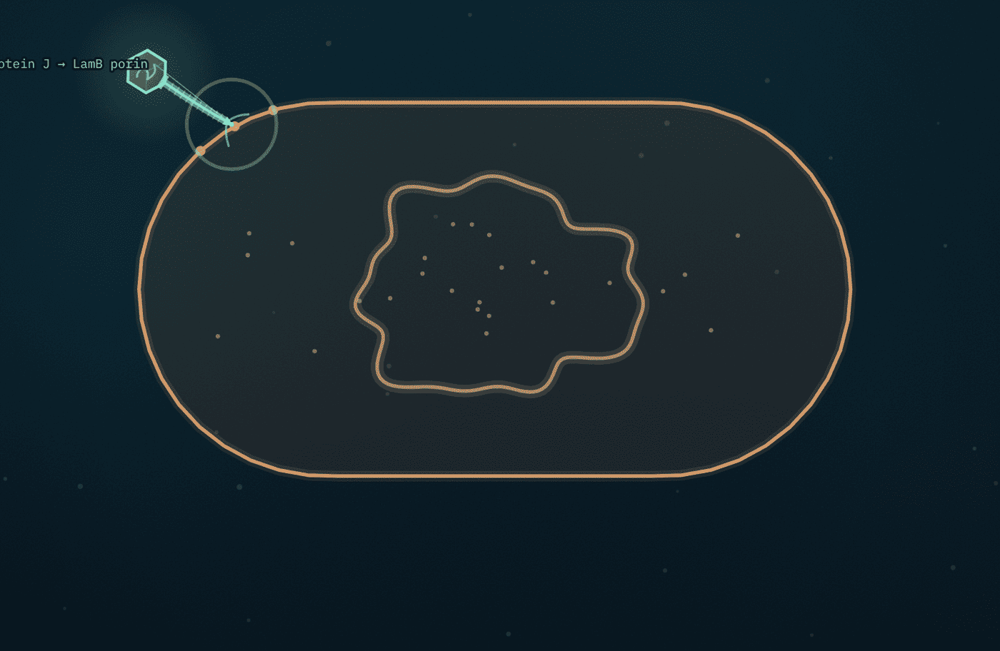
λ binds LamB, a porin the bacterium makes to take up maltose. The phage has evolved to recognise a protein the host needs for its own metabolism — which is why λ infects E. coli K-12 and very little else.
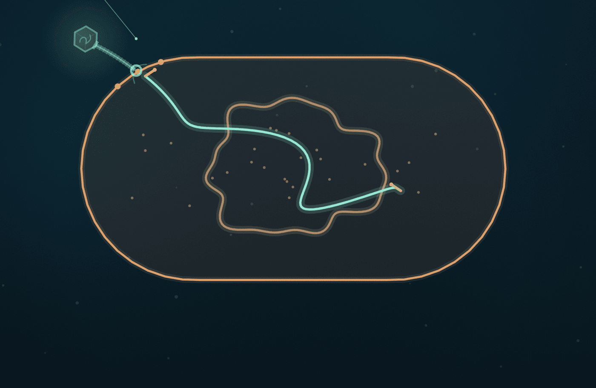
No sheath contracts. The DNA is driven down the flexible tail into the cytoplasm as a linear double-stranded molecule, 48,502 base pairs long.
Look for: the strand is a line with two ends, not yet a circle. That matters next.
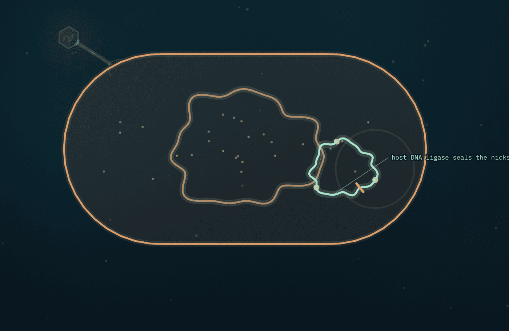
Each end of the λ genome carries a 12-nucleotide single-stranded overhang called a cos site. The two overhangs are complementary, so they base-pair with each other, and host DNA ligase seals the remaining nicks. The genome is now a covalently closed circle.
Why this step exists. A linear molecule has ends, and ends get chewed by host exonucleases. More importantly, the integration reaction that follows requires a circle — a linear genome physically cannot insert this way. Circularisation is the gateway to lysogeny, which is why it gets its own phase.
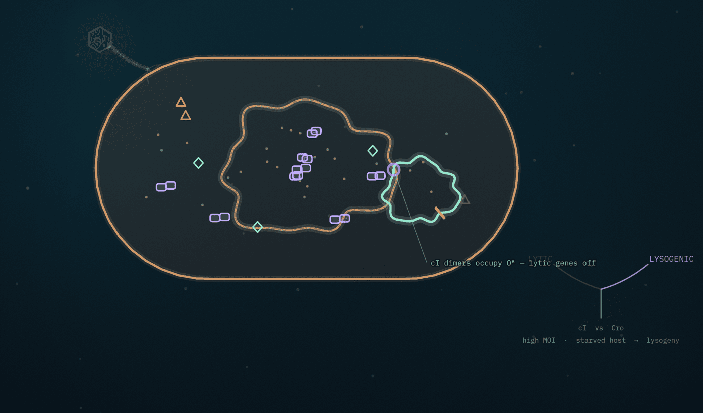
This is the heart of the film. Two proteins compete for the same stretch of DNA:
What tips the balance is a third protein, CII, which drives cI production. Host proteases destroy CII almost as fast as it is made, so CII only survives when conditions favour it — a high multiplicity of infection (many phages per cell, implying hosts are scarce) and a starved host (implying poor prospects for a burst). Enough CII survives, cI accumulates, dimerises, occupies the operators, and the lytic genes go quiet.
The decision is not random and it is not the phage "choosing". It is a molecular race whose outcome is biased by measurable conditions. A well-fed cell infected by a single phage usually goes lytic; a starved cell infected by several usually goes lysogenic. That is the answer to "why would a virus not kill its host" — when hosts are scarce, waiting inside one beats bursting and finding nothing.
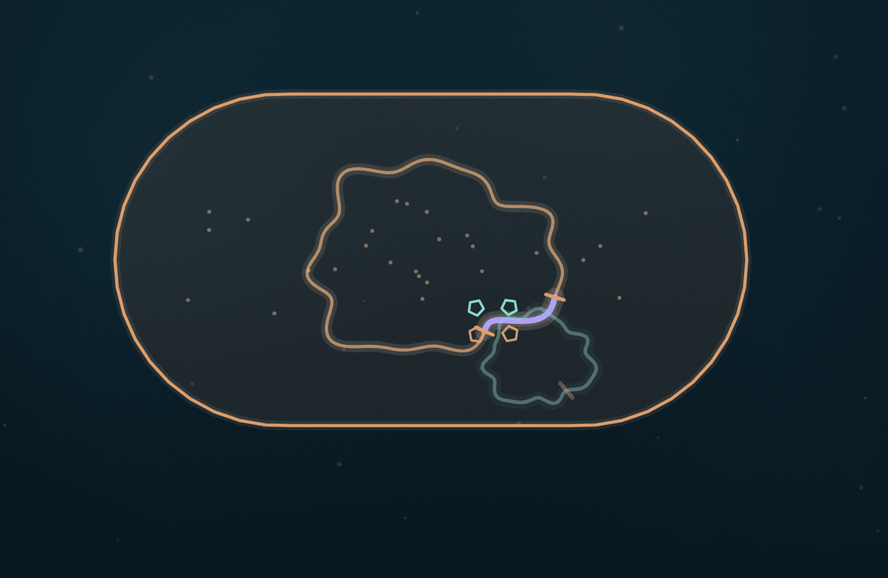
Int (phage integrase), helped by IHF (a host DNA-bending protein), lines up attP on the phage circle with attB on the bacterial chromosome and swaps the strands. λ does not insert anywhere it likes: attB is a single specific site, between the gal and bio operons. The phage genome is now physically part of the host chromosome — a prophage — flanked by two hybrid sites, attL and attR.
Look for: the moment the mint circle vanishes and a violet arc appears in the amber loop. Same DNA; new ownership; new colour.
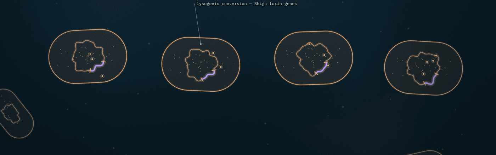
The prophage is silent but not gone. cI keeps the lytic genes repressed, and the prophage is copied along with the host chromosome at every division — so it spreads through the population without killing anything, and without building a single new particle. Watch the chromosome duplicate before the septum closes: that is how both daughters end up with a copy.
Two consequences worth knowing:
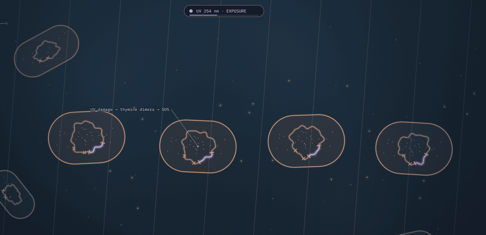
DNA damage — UV light here, or a chemical like mitomycin C — triggers the host's SOS response. RecA polymerises on single-stranded DNA at the damage and becomes a co-protease: it does not cut cI itself, but it stimulates cI to cleave itself in half. The repressor concentration collapses, Cro takes the operators, and the lytic genes fire.
The logic is elegant. The prophage is monitoring its host's health through a host stress signal. Damaged DNA means the cell may be dying — and a sinking ship is worth leaving. Note that two of the four lysogens do not induce: induction is never total.
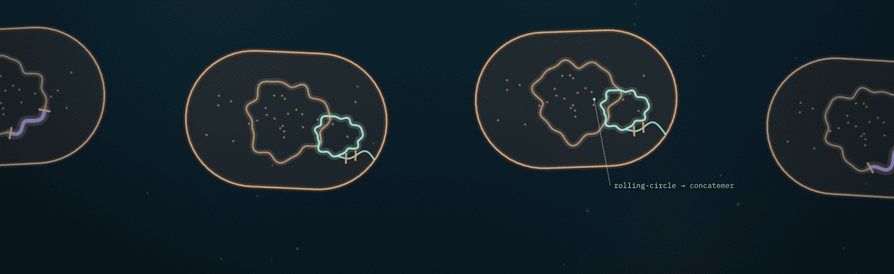
Xis together with Int runs the integration reaction backwards, cutting at attL and attR to excise the genome as a circle again. Replication then switches to rolling-circle, spinning out a long concatemer — many genomes end to end — which is cut at each cos site as it is packaged into heads.
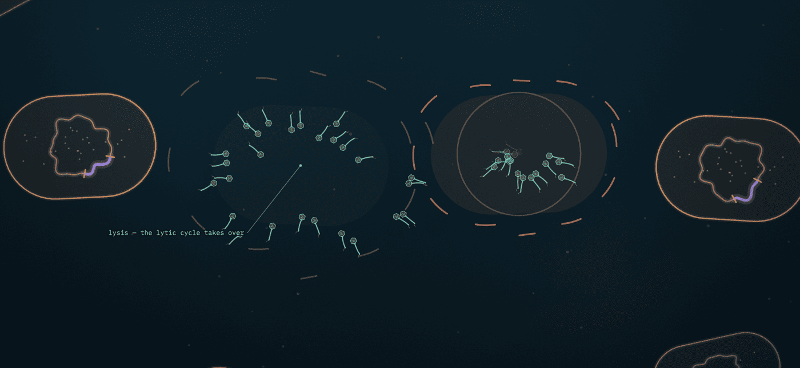
Rarely, excision is imprecise and cuts slightly off-target, carrying away the neighbouring gal or bio host genes inside the phage particle. Those genes then get delivered to the next cell. This is specialised transduction, and it is a real route by which bacteria acquire genes from each other.
Answers are hidden — have a go first. If you can answer these, you have followed the animations.
Because attachment depends on its tail fibres recognising a specific receptor molecule on the cell surface. No receptor, no attachment, no infection. Host range is decided at adsorption, before any genetic material has moved.
Because the components exist but have not been assembled yet. Phage DNA, capsid proteins and tails are all present separately; a particle is only infectious once they are put together and DNA is packaged.
Because the scene is deliberately sparse so individual particles can be followed. In a dense culture nearly every particle that adsorbs starts a new burst — which is why titer climbs roughly fiftyfold per generation.
Phage-encoded lysins digesting the peptidoglycan wall from within. The weakened cell cannot resist its internal osmotic pressure and ruptures. The phage does not "break out" mechanically — it dissolves the wall chemically.
Site-specific recombination between attP and attB inserts a circle into a circle. A linear molecule cannot undergo this reaction. Circularisation via the complementary cos overhangs, sealed by host ligase, is what makes integration possible.
Lysogenic. Both conditions stabilise CII, which drives cI production; cI then represses the lytic genes. Biologically it makes sense: many phages per cell implies hosts are scarce, and a starved host is a poor factory, so waiting beats bursting.
attB is the site on the bacterial chromosome and attP the site on the phage genome. Recombination between them produces two hybrid sites, attL and attR, which flank the prophage on the left and right. Excision recombines attL with attR to regenerate attB and attP.
Because cI repressor made from the prophage is present throughout the cytoplasm. Any incoming λ genome has its lytic genes repressed by that existing cI just as the prophage's own are. This is superinfection immunity.
Because RecA does not cut cI. Activated RecA stimulates cI to cleave itself — the repressor has latent self-cleaving activity that RecA promotes. Saying RecA cuts it gets the mechanism wrong.
No. Same species, same organism — it has acquired extra genes carried by a prophage, which it now expresses. This is lysogenic conversion. Cure the strain of its prophage and the toxin goes with it.
DNA damage triggers the SOS response, which induces the prophage. The Shiga toxin genes sit in that prophage and are expressed as it goes lytic, so the drug can increase toxin release and lysis rather than helping. Phase 07 and phase 06 connect directly.